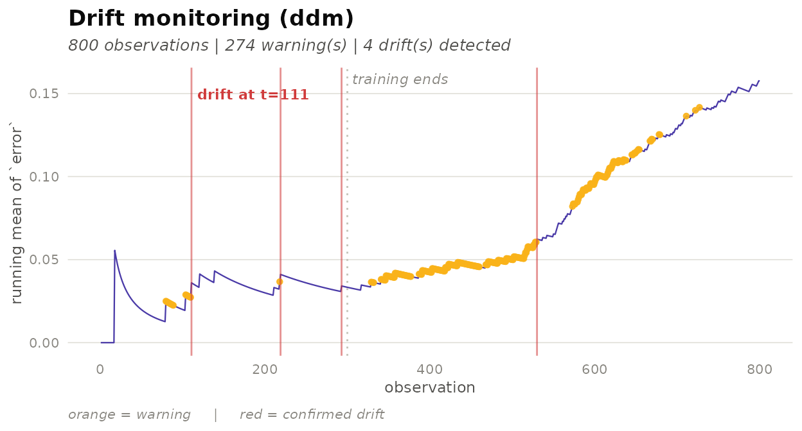

What is concept drift?
A machine learning model trained on historical data operates under the implicit assumption that the data-generating process remains stable over time. When this assumption breaks down — because user behaviour shifts, sensor calibration drifts, or the world simply changes — the model’s predictions degrade without any obvious error being raised. This phenomenon is called concept drift.
Monitoring for drift requires a drift detector: an algorithm
that reads a stream of per-observation signals (typically prediction
errors) and raises a flag when the signal’s distribution has changed
significantly. The deriva package provides a tidy interface
to a catalogue of 22 such detectors, designed to compose naturally with
the tidymodels ecosystem.
Quick start
The one-shot shortcut detect_drift() runs a detector
over an existing column and returns the data annotated with
.warning and .drift flags.
# Simulate a stream: 500 stable observations, then 500 with higher error rate
stream <- sim_drift_stream(n_pre = 500, n_post = 500,
p_pre = 0.05, p_post = 0.30,
seed = 42)
result <- detect_drift(stream, .col = error, method = "ddm")
# Where was drift flagged?
subset(result, .drift)
#> # A tibble: 3 × 5
#> t error drift_true .warning .drift
#> <int> <int> <lgl> <lgl> <lgl>
#> 1 49 1 FALSE FALSE TRUE
#> 2 388 1 FALSE FALSE TRUE
#> 3 512 1 TRUE FALSE TRUEThe detector correctly identifies the distributional change after the known drift point (observation 500).
The deriva interface
deriva follows the same three-verb pattern as
tidymodels: specify → fit → advance.
1. Specify a detector
drift_detector() creates an inert specification — no
computation happens here.
spec <- drift_detector("ddm", min_instances = 30)
spec
#> Drift Detector Specification (ddm)
#> min_instances: 30
#> warning_level: 2
#> out_control_level: 3Pass method hyperparameters as named arguments. Unknown parameters raise an informative error.
2. Fit on a baseline
fit() runs the detector over the baseline
period — the stable window against which future observations
are compared.
baseline <- sim_drift_stream(n_pre = 300, n_post = 0, seed = 1)
fitted <- fit(spec, baseline, signal = error)
fitted
#> Fitted Drift Detector (ddm)
#> observations: 300 (300 baseline)
#> warnings: 18 | drifts: 3The fitted object is immutable: it stores the internal engine state after processing the baseline, ready to receive new data.
3. Advance over new batches
advance() feeds a new batch to the detector and returns
a new fitted object with the state updated and the
annotated batch appended to the history. The original object is not
modified.
batch1 <- sim_drift_stream(n_pre = 200, n_post = 0, seed = 2)
batch2 <- sim_drift_stream(n_pre = 0, n_post = 300, p_post = 0.35, seed = 3)
fitted2 <- advance(fitted, batch1)
fitted3 <- advance(fitted2, batch2)
fitted3
#> Fitted Drift Detector (ddm)
#> observations: 800 (300 baseline)
#> warnings: 274 | drifts: 4Batches can be any size — including a single observation for true streaming use.
4. Inspect results
augment() returns the full annotated
history as a tibble.
history <- augment(fitted3)
tail(history[, c("t", "error", ".phase", ".warning", ".drift")], 10)
#> # A tibble: 10 × 5
#> t error .phase .warning .drift
#> <int> <int> <chr> <lgl> <lgl>
#> 1 291 1 stream FALSE FALSE
#> 2 292 0 stream FALSE FALSE
#> 3 293 0 stream FALSE FALSE
#> 4 294 0 stream FALSE FALSE
#> 5 295 0 stream FALSE FALSE
#> 6 296 0 stream FALSE FALSE
#> 7 297 1 stream FALSE FALSE
#> 8 298 1 stream FALSE FALSE
#> 9 299 1 stream FALSE FALSE
#> 10 300 0 stream FALSE FALSEtidy() extracts the detected drift
points.
tidy(fitted3)
#> # A tibble: 4 × 2
#> index phase
#> <int> <chr>
#> 1 111 baseline
#> 2 219 baseline
#> 3 293 baseline
#> 4 530 streamglance() gives a one-row summary.
glance(fitted3)
#> # A tibble: 1 × 5
#> method n_obs n_warning n_drift first_drift
#> <chr> <int> <int> <int> <int>
#> 1 ddm 800 274 4 111autoplot() plots the running mean of
the signal with warning (orange) and drift (red) markers, and a dotted
line separating baseline from stream.

Bridging from tidymodels
In a real workflow, the signal column comes from model predictions,
not a simulation. add_prediction_error() converts the
output of tidymodels’ augment() (which contains truth and
estimate columns) into a .error column that drift detectors
can consume.
# Simulate tidymodels augment() output for a classifier
predictions <- data.frame(
time = 1:8,
truth = factor(c("yes","no","yes","yes","no","yes","no","yes")),
.pred_class = factor(c("yes","no","yes","no" ,"no","no" ,"no","yes"))
)
add_prediction_error(predictions, truth = truth)
#> # A tibble: 8 × 4
#> time truth .pred_class .error
#> <int> <fct> <fct> <int>
#> 1 1 yes yes 0
#> 2 2 no no 0
#> 3 3 yes yes 0
#> 4 4 yes no 1
#> 5 5 no no 0
#> 6 6 yes no 1
#> 7 7 no no 0
#> 8 8 yes yes 0For regression problems, .error is the absolute
prediction error; for classification it is a 0/1 mismatch indicator.
Distribution-based detectors
Some detectors monitor the distribution of a numeric stream directly,
without requiring labelled errors. These
signal_type = "distribution" methods (such as
"kswin" and "adwin") expect a continuous input
column.
cont_stream <- sim_dist_stream(
n_pre = 500, n_post = 500,
mean_pre = 0, mean_post = 2,
seed = 99
)
detect_drift(cont_stream, .col = value, method = "kswin") |>
subset(.drift) |>
head()
#> # A tibble: 6 × 5
#> t value drift_true .warning .drift
#> <int> <dbl> <lgl> <lgl> <lgl>
#> 1 222 2.03 FALSE NA TRUE
#> 2 374 -1.54 FALSE NA TRUE
#> 3 491 0.0701 FALSE NA TRUE
#> 4 561 2.40 TRUE NA TRUE
#> 5 796 2.31 TRUE NA TRUE
#> 6 980 3.20 TRUE NA TRUEAvailable methods
deriva ships with 22 drift detectors across two signal
types.
| Signal type | Methods |
|---|---|
"error" (0/1 or continuous error) |
ddm, eddm, hddm_a,
hddm_w, ewma, rddm,
stepd, fhddm, fhddms,
mddm_a, mddm_e, mddm_g,
wstd, ftdd, fpdd,
fsdd
|
"distribution" (numeric stream) |
kswin, adwin, page_hinkley,
cusum, seed, seqdrift2
|
Use drift_detector("<method>") to inspect default
hyperparameters for any method.
Summary
The core deriva workflow is:
drift_detector("ddm") |> # specify
fit(baseline, signal = error) |> # learn reference level
advance(new_batch) # update state, persist flagsSupplementary verbs — augment(), tidy(),
glance(), autoplot() — follow the tidymodels
convention and make it straightforward to inspect, summarise, and plot
detection results at any point in the stream.